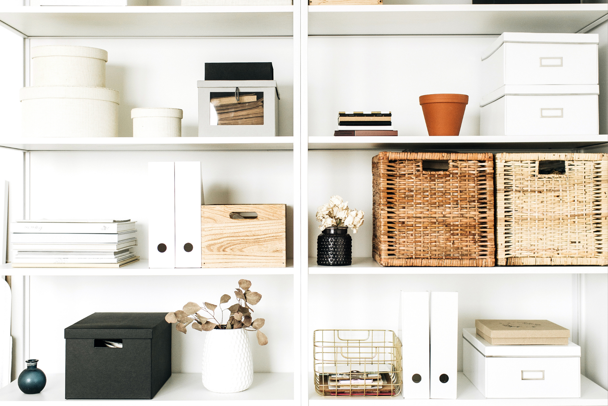
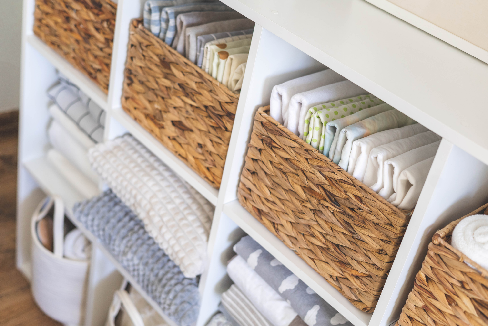
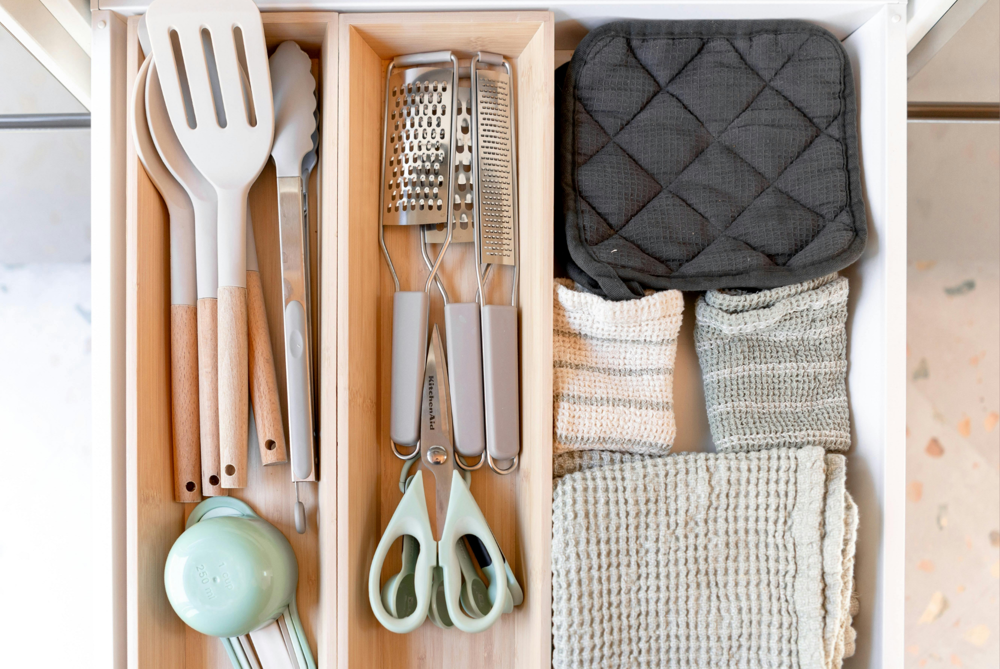

Modern homes have a funny way of making us feel like we should have plenty of storage—until we actually try to put everything away.
The kitchen counters collect appliances. The entryway becomes a landing spot for keys and bags. Blankets end up on the couch, shoes pile up by the door, and somehow there is never quite enough space for all the little things we use every day.
The answer isn't always adding more furniture or buying bigger storage bins.
Sometimes, the best storage solutions are the ones that work with the space you already have.
The goal is simple: give the things you use a designated home without making your home feel like a storage unit.
Here are a few practical storage solutions that can make a modern home feel cleaner, calmer, and easier to live in.
1. Look for the Empty Spaces
Before buying another bookshelf or storage cabinet, take a look at the spaces you're not currently using.
That narrow area beside the refrigerator? It might fit a slim rolling cart. The space underneath your bed? Perfect for seasonal clothing, extra bedding, or shoes. The wall above a desk? A few simple shelves can turn unused vertical space into useful storage.
Even the space behind a door can become an opportunity with an over-the-door organizer.
Modern homes often have limited square footage, so thinking vertically can make a surprisingly big difference. Instead of trying to make everything fit across the floor, look up.
2. Choose Furniture That Does Double Duty
One of the easiest ways to add storage without adding clutter is to choose furniture that serves more than one purpose.
Think ottomans with hidden compartments, beds with drawers underneath, benches with lift-up seats, or coffee tables with shelves and drawers.
An entryway bench, for example, can give you a place to sit while putting on shoes while also hiding baskets underneath for shoes, bags, or accessories.
The same idea works throughout the house.
A nightstand with drawers gives you somewhere to keep chargers and personal items. A console table with drawers can hide keys, mail, and everyday essentials. A storage cabinet can hold household supplies without looking like a utility closet.
When storage is built into something you're already going to use, it doesn't have to feel like an additional organizational project.
3. Use Baskets to Hide Everyday Clutter
Some things simply need to be easy to grab. Blankets. Toys. Extra pillows. Remote controls. Pet supplies. Chargers. But easy access doesn't mean everything needs to be sitting out in the open.
Baskets are one of the simplest ways to create a designated spot for these everyday items while keeping visual clutter under control.
A large basket next to the sofa can hold extra blankets. Smaller baskets on a shelf can group together electronics or accessories. A lidded basket can hide toys or items that you want nearby but don't necessarily want to see.
The trick is to give each basket a purpose. Instead of creating a basket for “random stuff,” create one for blankets, one for electronics, or one for items that belong elsewhere.
That small distinction can make staying organized much easier.

4. Create a Drop Zone by the Door
The entryway is one of the easiest places for clutter to accumulate.
Keys, sunglasses, shoes, mail, bags, jackets—the things we carry into the house tend to land wherever there happens to be an empty surface.
A small entryway drop zone can prevent that. You don't need a large mudroom. A narrow console, wall-mounted hooks, a small tray, or a few baskets can be enough.
Give your most frequently used items a specific place to go. Keys can go in a small bowl or tray. Bags can hang from hooks. Shoes can have a basket or designated shelf. Mail can have a simple holder instead of becoming a pile on the counter.
The goal isn't to make the entryway perfectly styled. It's to make putting things away almost automatic.
5. Make Your Kitchen Storage Work Harder
Kitchen storage can disappear quickly, especially in smaller homes.
Instead of stuffing every cabinet until you can't find anything, look for ways to make the existing space more efficient.
Shelf risers can create additional levels inside cabinets. Drawer organizers can keep utensils separated. Clear containers can make frequently used pantry items easier to see.
Don't forget the backs of cabinet doors, either. They can be useful for storing measuring spoons, cutting boards, cleaning supplies, or other small items.
And when it comes to countertops, consider what you actually use every day.
If an appliance is used once a month, it probably doesn't need to occupy prime counter space.

6. Don't Forget the Bathroom
Bathroom storage is another place where vertical space can help.
Floating shelves can provide room for towels and everyday products without taking up valuable floor space. Narrow rolling carts can fit between a sink and wall. Baskets can keep extra toilet paper and towels contained.
For smaller bathrooms, consider storing only the products you use regularly within easy reach. Everything else can go into a cabinet, drawer, or designated backup-storage area. A less crowded counter can make even a small bathroom feel significantly more spacious.
7. Use Pretty Storage Where It Will Be Seen
Storage doesn't have to look purely functional. In fact, some of the most useful storage pieces can also become part of your home's decor.
A woven basket, attractive storage cabinet, wooden box, or decorative tray can keep things organized while adding texture and personality to a room. This is especially helpful in open-concept homes where storage is visible from multiple areas.
You don't necessarily need to hide every organizational tool. Sometimes the better approach is choosing storage that you actually like looking at.
8. Store Things Where You Use Them
One of the biggest mistakes people make when organizing is putting things away based on where they should go instead of where they're actually used.
If you always read on the sofa, keep your books and reading glasses nearby. If you regularly walk the dog through the front door, create a small spot there for leashes and waste bags. If you use certain cleaning products in the bathroom, store them close to the bathroom rather than across the house.
The easier something is to put away, the more likely you are to actually put it away. Good organization should make your routine easier—not add another step to it.
9. Leave Some Empty Space
It can be tempting to fill every shelf, cabinet, and basket once you've started organizing. But storage works better when it isn't completely full. Leaving a little extra room makes it easier to put things away and gives you flexibility when something new comes into the house.
It also helps your home feel less visually crowded. The goal isn't to maximize every available inch. It's to create enough space that your belongings have somewhere to go without making the room feel overwhelmed.
The Best Storage Solution Is the One You'll Actually Use
A well-organized home doesn't necessarily mean having perfectly labeled containers or an elaborate system for every room.
Sometimes, it's as simple as adding a basket beside the sofa, a tray by the front door, or a cabinet in an awkward corner.
The most practical storage solutions are the ones that fit naturally into your daily life. Start with the places where clutter repeatedly appears. Instead of asking, “How can I hide this?” ask, “What would make this easier to put away?”
You may not need more space. You may just need to give the space you already have a better job to do.